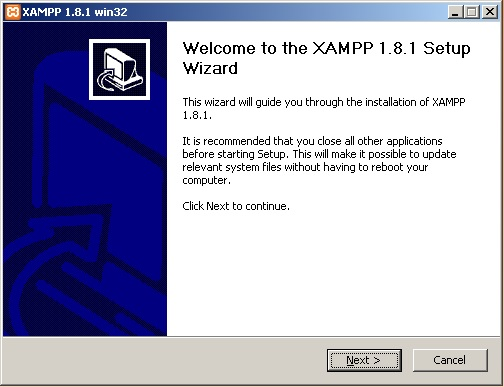
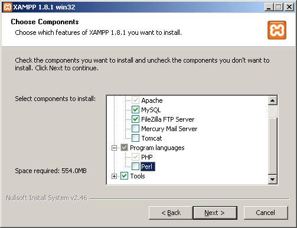
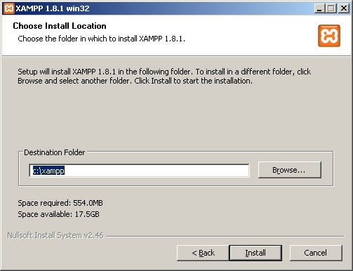
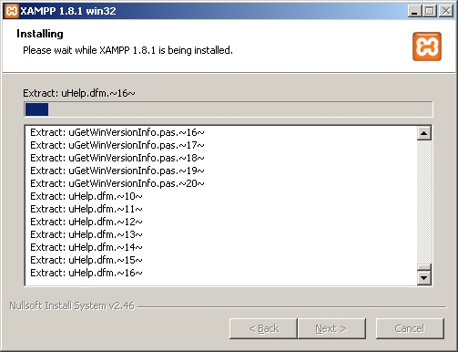
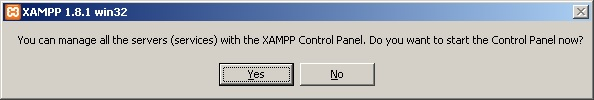

در این دوره ی آموزشی، تصمیم دارم گام به گام از صفر شروع کنم و مراحل نصب PHP و سپس دروپال رو بر روی ویندوز شرح دهم. هدف دوره، آموزش مقدماتی Drupal می باشد و تا هر مقدار که فرصت باشد، پیش خواهیم رفت.
قبل از هر چیز، باید موارد زیر را چک کنید:
- ویندوز 7 یا ویندوز 8 داشته باشید. ویندوز XP یا هر ویندوز دیگری هم قابل استفاده است اما در ویندوز های قدیمی تر، ممکن است نیاز به برخی افزونه های .NET داشته باشید که در هر صورت مشکل مهمی نخواهد بود.
- قبلا بر روی سیستم تان نباید نرم افزار های Wamp یا IIS یا وب سرور داشته باشید. اگر IIS نصب است، آن را غیر فعال کنید. فرض من بر این است که روی یک سیستم clean & fresh کار را شروع می کنیم. پورت های 80 و 443 و 3306 که توسط xampp استفاده می شوند، باید در دسترس باشد.
- اگر روی سیستم تان Micrsosoft SQL Server Reporting Service نصب است، ممکن است برای نصب xampp با مشکل مواجه شوید. چون این برنامه پورت های وب را اشغال میکند. برای نصب xampp ابتدا آن را غیر فعال کنید (یا stop کنید)
- باید به سیستم دسترسی Administrator داشته باشید.
گام اول این است که نرم افزار xampp را از سایت زیر دانلود کنید:
http://sourceforge.net/projects/xampp/files/XAMPP%20Windows/
توصیه می کنم که برای استفاده از این دوره ی آموزشی، xampp نسخه ی 1.8.1 را نصب کنید زیرا اگر نسخه ی دیگری را دانلود و نصب کنید، ممکن است برخی مراحل کار با آنچه که در ادامه شرح خواهم داد متفاوت باشد. لینک مستقیم برای دانلود فایل xampp-win32-1.8.1-VC9-installer.exe .
به روز رسانی 6 اردیبهشت 94:
برای بهترین سازگاری با دروپال 7، لطفا نسخه ی 5.5.24 را دانلود کنید.
https://www.apachefriends.org/download.html
دانلود مستقیم از لینک زیر:
https://www.apachefriends.org/xampp-files/5.5.24/xampp-win32-5.5.24-0-VC11-installer.exe
پس از دانلود فایل، آن را با استفاده از Run ad administrator اجرا کنید. (روی آن راست کلیک کنید و Run as administrator را انتخاب نمایید)

بر روی دکمه ی Next کلیک کنید تا به صفحه ی دوم و انتخاب پکیج ها برسید.

ما قصد داریم که PHP را نصب کنیم، برای همین نیازی به نصب Perl و Mercury و Tomcat نداریم. همانطور که تصویر فوق می بینید، می توانید گزینه های اضافی را غیر فعال کنید.
سپس بر روی دکمه ی Next کلیک کنید تا به مرحله ی انتخاب محل نصب xampp برسید.

توصیه ی من این است که محل نصب xampp را تغییر ندهید. یا در صورت تمایل می توانید آن را در داریو دیگری مانند D نصب کنید. اما مسیر xampp را ترجیحا ساده و سر راست انتخاب کنید.
هنگامی که دکمه ی Next را کلیک کنید، فرایند نصب شروع می شود مطابق تصویر زیر:

پس از اتمام نصب، دیالوگ زیر را خواهیم دید که دکمه ی Yes را در آن کلیک کنید تا کنترل پنل xampp باز شود.

در زیر تصویر کنترل پنل زمپ را می بینید.

در این مرحله، نصب xampp به پایان رسید. در ادامه، روش پیکربندی آن را شرح خواهم داد.
موفق باشید.